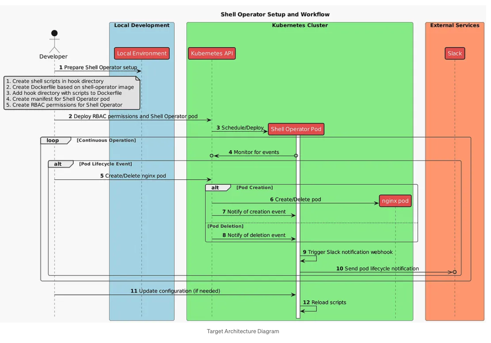
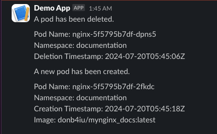

operations shell operator
August 8, 2024 at 3:25 PMTable of Contents
-
Shell Operator
- References
- Build Docker image for operator
- Setup Operator
-
Update Crossplane
- #( 07/20/24@ 1:11AM )( donbuddenbaum@donbs-imac ):~/Documents/Kalaxy2/yaml/shell_operator/crossplane_provider/old@main✗✗✗
- #( 07/20/24@ 1:13AM )( donbuddenbaum@donbs-imac ):~/Documents/Kalaxy2/yaml/shell_operator/crossplane_provider/old@main✗✗✗
- #( 07/20/24@ 1:16AM )( donbuddenbaum@donbs-imac ):~/Documents/Kalaxy2/yaml/shell_operator/crossplane_provider/old@main✗✗✗
- Slack Message
- shell-operator Log
Shell Operator

References
- Automate Kubernetes with Shell-Operator
- Piotr1215/shell-operator-demo
- provider-http
- provider-http/resources-docs/disposablerequest_docs.md
Build Docker image for operator
docker buildx create --use --name temp-builder
docker buildx build --platform linux/amd64,linux/arm64 -f yaml/shell_operator/Dockerfile -t donb4iu/shell-operator-hooks:latest --push .
docker buildx rm temp-builder
#( 07/16/24@ 7:15PM )( donbuddenbaum@donbs-imac ):~/Documents/Kalaxy2@main✗✗✗
docker buildx create –use
ecstatic_cray
#( 07/16/24@ 7:16PM )( donbuddenbaum@donbs-imac ):~/Documents/Kalaxy2@main✗✗✗
docker buildx build –platform linux/amd64,linux/arm64 -f yaml/shell_operator/Dockerfile -t donb4iu/shell-operator-hooks:latest –push .
[+] Building 59.4s (15/15) FINISHED docker-container:ecstatic_cray
=> [internal] booting buildkit 16.1s
=> => pulling image moby/buildkit:buildx-stable-1 14.2s
=> => creating container buildx_buildkit_ecstatic_cray0 1.9s
=> [internal] load build definition from Dockerfile 0.1s
=> => transferring dockerfile: 152B 0.0s
=> [linux/arm64 internal] load metadata for docker.io/flant/shell-operator:latest 1.6s
=> [linux/amd64 internal] load metadata for docker.io/flant/shell-operator:latest 1.4s
=> [auth] flant/shell-operator:pull token for registry-1.docker.io 0.0s
=> [internal] load .dockerignore 0.0s
=> => transferring context: 2B 0.0s
=> [internal] load build context 0.2s
=> => transferring context: 3.55kB 0.0s
=> [linux/amd64 1/3] FROM docker.io/flant/shell-operator:latest@sha256:78badc3b889781e4b74d465936688dd9ce56211d3200409e7d9e7bdd30e81562 9.7s
=> => resolve docker.io/flant/shell-operator:latest@sha256:78badc3b889781e4b74d465936688dd9ce56211d3200409e7d9e7bdd30e81562 0.0s
=> => sha256:8ea74afb5906ad96cd567632bb02367f0ced919ac31418429825893e7443fc6b 331.80kB / 331.80kB 0.6s
=> => sha256:fb0eb53e5ca2d71cdb1cfee432e18ba63ff058da64955976113730c1c7a72108 13.90MB / 13.90MB 4.9s
=> => sha256:dd79b5b6ba20162a1e8e8d290ce410037b8a697154bafb98f6c802b885563cbe 16.68MB / 16.68MB 3.8s
=> => sha256:82b00235610d160010c61f0c272b3e83ba7973da54f16e2be449c45d13ed5865 1.84kB / 1.84kB 0.2s
=> => sha256:ec99f8b99825a742d50fb3ce173d291378a46ab54b8ef7dd75e5654e2a296e99 3.62MB / 3.62MB 1.5s
=> => extracting sha256:ec99f8b99825a742d50fb3ce173d291378a46ab54b8ef7dd75e5654e2a296e99 0.5s
=> => extracting sha256:dd79b5b6ba20162a1e8e8d290ce410037b8a697154bafb98f6c802b885563cbe 1.7s
=> => extracting sha256:82b00235610d160010c61f0c272b3e83ba7973da54f16e2be449c45d13ed5865 0.0s
=> => extracting sha256:ad658c28cd77506acfcd495fef1970e3dd5cb06be4fd12cac59d1e6c3625b122 0.0s
=> => extracting sha256:8ea74afb5906ad96cd567632bb02367f0ced919ac31418429825893e7443fc6b 0.1s
=> => extracting sha256:fb0eb53e5ca2d71cdb1cfee432e18ba63ff058da64955976113730c1c7a72108 1.5s
=> [linux/arm64 1/3] FROM docker.io/flant/shell-operator:latest@sha256:78badc3b889781e4b74d465936688dd9ce56211d3200409e7d9e7bdd30e81562 11.3s
=> => resolve docker.io/flant/shell-operator:latest@sha256:78badc3b889781e4b74d465936688dd9ce56211d3200409e7d9e7bdd30e81562 0.0s
=> => sha256:fcc14534468ff49db2060cd52eb22c5e72c771860741d4789522d54665df418e 12.58MB / 12.58MB 2.2s
=> => sha256:d7fb639546e19a61a0ea5d5e6bd4103920420820580b6ac68655045c5b5a19ba 322.29kB / 322.29kB 0.4s
=> => sha256:ad658c28cd77506acfcd495fef1970e3dd5cb06be4fd12cac59d1e6c3625b122 496B / 496B 0.4s
=> => sha256:b4c2b5c3a7b1649e0f19c68a492de9579297a57c53cd65e1f6db06354ac6f232 1.84kB / 1.84kB 0.5s
=> => sha256:fbbcca973eda7a5b37f8c47f28a5febec30f2f44bd2768dd63dbf4820585388b 15.36MB / 15.36MB 6.0s
=> => sha256:a258b2a6b59a7aa244d8ceab095c7f8df726f27075a69fca7ad8490f3f63148a 4.09MB / 4.09MB 2.0s
=> => extracting sha256:a258b2a6b59a7aa244d8ceab095c7f8df726f27075a69fca7ad8490f3f63148a 0.6s
=> => extracting sha256:fbbcca973eda7a5b37f8c47f28a5febec30f2f44bd2768dd63dbf4820585388b 1.8s
=> => extracting sha256:b4c2b5c3a7b1649e0f19c68a492de9579297a57c53cd65e1f6db06354ac6f232 0.0s
=> => extracting sha256:ad658c28cd77506acfcd495fef1970e3dd5cb06be4fd12cac59d1e6c3625b122 0.0s
=> => extracting sha256:d7fb639546e19a61a0ea5d5e6bd4103920420820580b6ac68655045c5b5a19ba 0.1s
=> => extracting sha256:fcc14534468ff49db2060cd52eb22c5e72c771860741d4789522d54665df418e 2.6s
=> [linux/amd64 2/3] COPY yaml/shell_operator/documentation_operator/hooks /hooks 1.6s
=> [linux/arm64 2/3] COPY yaml/shell_operator/documentation_operator/hooks /hooks 0.3s
=> [linux/amd64 3/3] RUN chmod +x /hooks/* 0.4s
=> [linux/arm64 3/3] RUN chmod +x /hooks/* 0.2s
=> exporting to image 28.1s
=> => exporting layers 0.2s
=> => exporting manifest sha256:ccd62ec5cf91eaf0c81e4d39f29df1d7638a8c59cc5b5747982649030b51da25 0.0s
=> => exporting config sha256:6892e6523ea659a7963164e2e21234be58597b3ba10d7cb31e4e59e444750afa 0.0s
=> => exporting attestation manifest sha256:6c69e7d4b98afbdb33411dae0d5a667d929cc9286dcd96a6c6874163680e130a 0.0s
=> => exporting manifest sha256:148bbc1cc78799a189f7f8d1fdbdf20297ca6aed92c5ada22b19866b194692cd 0.0s
=> => exporting config sha256:458ba3a5ec90eed730e27c8c25fae5d96d3a06f5a359ae3e2f7aa441df986182 0.0s
=> => exporting attestation manifest sha256:542e648e1e465d0bb8dfdade89e5bdc21d18f89888880dce61032f59879ce927 0.0s
=> => exporting manifest list sha256:762a8bdf7203431411c70d6d461a5bc1b9d2fafdd32249a6af9c48ba1bdc6a77 0.0s
=> => pushing layers 26.1s
=> => pushing manifest for docker.io/donb4iu/shell-operator-hooks:latest@sha256:762a8bdf7203431411c70d6d461a5bc1b9d2fafdd32249a6af9c48ba1bdc6a77 1.5s
=> [auth] donb4iu/shell-operator-hooks:pull,push token for registry-1.docker.io
Setup Operator
#( 07/16/24@ 7:53PM )( donbuddenbaum@donbs-imac ):~/Documents/Kalaxy2@main✗✗✗
kubectl apply -f yaml/shell_operator/documentation_operator/service-account.yaml
kubectl apply -f yaml/shell_operator/documentation_operator/cluster-role.yaml
kubectl apply -f yaml/shell_operator/documentation_operator/cluster-role-binding.yaml
kubectl apply -f yaml/shell_operator/documentation_operator/shell-operator-pod.yaml
serviceaccount/monitor-pods-acc created
clusterrole.rbac.authorization.k8s.io/pod-manager-clusterrole created
clusterrolebinding.rbac.authorization.k8s.io/monitor-pods-acc-clusterrolebinding created
pod/shell-operator created
Update Crossplane
#( 07/20/24@ 1:11AM )( donbuddenbaum@donbs-imac ):~/Documents/Kalaxy2/yaml/shell_operator/crossplane_provider/old@main✗✗✗
kubectl apply -f providers.yaml
provider.pkg.crossplane.io/provider-helm created
deploymentruntimeconfig.pkg.crossplane.io/provider-helm created
clusterrolebinding.rbac.authorization.k8s.io/provider-helm-cluster-admin unchanged
provider.pkg.crossplane.io/provider-http created
provider.pkg.crossplane.io/provider-kubernetes created
deploymentruntimeconfig.pkg.crossplane.io/provider-kubernetes created
clusterrolebinding.rbac.authorization.k8s.io/provider-kubernetes-cluster-admin unchanged
#( 07/20/24@ 1:13AM )( donbuddenbaum@donbs-imac ):~/Documents/Kalaxy2/yaml/shell_operator/crossplane_provider/old@main✗✗✗
kubectl apply -f functions.yaml
function.pkg.crossplane.io/function-patch-and-transform created
function.pkg.crossplane.io/function-auto-ready created
function.pkg.crossplane.io/function-sequencer created
#( 07/20/24@ 1:16AM )( donbuddenbaum@donbs-imac ):~/Documents/Kalaxy2/yaml/shell_operator/crossplane_provider/old@main✗✗✗
kubectl apply -f provider-configs.yaml
providerconfig.http.crossplane.io/default created
providerconfig.kubernetes.crossplane.io/default created
providerconfig.helm.crossplane.io/default created
Slack Message

shell-operator Log
{"level":"info","msg":"shell-operator v1.4.10","time":"2024-07-20T05:27:23Z"}
{"level":"info","msg":"Debug endpoint listen on /var/run/shell-operator/debug.socket","time":"2024-07-20T05:27:23Z"}
{"level":"info","msg":"Create metric counter shell_operator_live_ticks","operator.component":"metricStorage","time":"2024-07-20T05:27:23Z"}
{"level":"info","msg":"Create metric histogram shell_operator_tasks_queue_action_duration_seconds","operator.component":"metricsStorage","time":"2024-07-20T05:27:23Z"}
{"level":"info","msg":"Create metric gauge shell_operator_tasks_queue_length","operator.component":"metricStorage","time":"2024-07-20T05:27:23Z"}
{"level":"info","msg":"Create metric gauge shell_operator_kube_snapshot_objects","operator.component":"metricStorage","time":"2024-07-20T05:27:23Z"}
{"level":"info","msg":"Create metric histogram shell_operator_kube_jq_filter_duration_seconds","operator.component":"metricsStorage","time":"2024-07-20T05:27:23Z"}
{"level":"info","msg":"Create metric histogram shell_operator_kube_event_duration_seconds","operator.component":"metricsStorage","time":"2024-07-20T05:27:23Z"}
{"level":"info","msg":"Create metric counter shell_operator_kubernetes_client_watch_errors_total","operator.component":"metricStorage","time":"2024-07-20T05:27:23Z"}
{"level":"info","msg":"Create metric histogram shell_operator_kubernetes_client_request_latency_seconds","operator.component":"metricsStorage","time":"2024-07-20T05:27:23Z"}
{"level":"info","msg":"Create metric counter shell_operator_kubernetes_client_request_result_total","operator.component":"metricStorage","time":"2024-07-20T05:27:23Z"}
{"level":"info","msg":"Kubernetes client is configured successfully with 'out-of-cluster' config","operator.component":"KubernetesAPIClient","time":"2024-07-20T05:27:23Z"}
{"level":"info","msg":"Kubernetes client is configured successfully with 'out-of-cluster' config","operator.component":"KubernetesAPIClient","time":"2024-07-20T05:27:23Z"}
{"level":"info","msg":"Create metric gauge shell_operator_hook_enable_kubernetes_bindings_seconds","operator.component":"metricStorage","time":"2024-07-20T05:27:23Z"}
{"level":"info","msg":"Create metric counter shell_operator_hook_enable_kubernetes_bindings_errors_total","operator.component":"metricStorage","time":"2024-07-20T05:27:23Z"}
{"level":"info","msg":"Create metric gauge shell_operator_hook_enable_kubernetes_bindings_success","operator.component":"metricStorage","time":"2024-07-20T05:27:23Z"}
{"level":"info","msg":"Create metric histogram shell_operator_hook_run_seconds","operator.component":"metricsStorage","time":"2024-07-20T05:27:23Z"}
{"level":"info","msg":"Create metric histogram shell_operator_hook_run_user_cpu_seconds","operator.component":"metricsStorage","time":"2024-07-20T05:27:23Z"}
{"level":"info","msg":"Create metric histogram shell_operator_hook_run_sys_cpu_seconds","operator.component":"metricsStorage","time":"2024-07-20T05:27:23Z"}
{"level":"info","msg":"Create metric gauge shell_operator_hook_run_max_rss_bytes","operator.component":"metricStorage","time":"2024-07-20T05:27:23Z"}
{"level":"info","msg":"Create metric counter shell_operator_hook_run_errors_total","operator.component":"metricStorage","time":"2024-07-20T05:27:23Z"}
{"level":"info","msg":"Create metric counter shell_operator_hook_run_allowed_errors_total","operator.component":"metricStorage","time":"2024-07-20T05:27:23Z"}
{"level":"info","msg":"Create metric counter shell_operator_hook_run_success_total","operator.component":"metricStorage","time":"2024-07-20T05:27:23Z"}
{"level":"info","msg":"Create metric counter shell_operator_task_wait_in_queue_seconds_total","operator.component":"metricStorage","time":"2024-07-20T05:27:23Z"}
{"level":"info","msg":"Initialize hooks manager. Search for and load all hooks.","time":"2024-07-20T05:27:23Z"}
{"hook":"pods-create-call-slack.sh","level":"info","msg":"Load config from '/hooks/pods-create-call-slack.sh'","phase":"config","time":"2024-07-20T05:27:23Z"}
{"hook":"pods-create-call-slack.sh","level":"info","msg":"Loaded config: Watch k8s kinds: 'Pod'","phase":"config","time":"2024-07-20T05:27:23Z"}
{"hook":"pods-delete-call-slack.sh","level":"info","msg":"Load config from '/hooks/pods-delete-call-slack.sh'","phase":"config","time":"2024-07-20T05:27:23Z"}
{"hook":"pods-delete-call-slack.sh","level":"info","msg":"Loaded config: Watch k8s kinds: 'Pod'","phase":"config","time":"2024-07-20T05:27:23Z"}
{"level":"info","msg":"start shell-operator","time":"2024-07-20T05:27:23Z"}
{"level":"info","msg":"base http server started at 0.0.0.0:9115","time":"2024-07-20T05:27:23Z"}
{"level":"info","msg":"queue task EnableKubernetesBindings:::pods-create-call-slack.sh:EnableKubernetesBindings for hook pods-create-call-slack.sh","operator.component":"initMainQueue","time":"2024-07-20T05:27:23Z"}
{"level":"info","msg":"queue task EnableKubernetesBindings:::pods-delete-call-slack.sh:EnableKubernetesBindings for hook pods-delete-call-slack.sh","operator.component":"initMainQueue","time":"2024-07-20T05:27:23Z"}
{"binding":"","hook":"pods-create-call-slack.sh","level":"info","msg":"Enable kubernetes binding for hook","queue":"main","task":"EnableKubernetesBindings","time":"2024-07-20T05:27:23Z"}
{"level":"info","msg":"Create metric histogram shell_operator_kubernetes_client_rate_limiter_latency_seconds","operator.component":"metricsStorage","time":"2024-07-20T05:27:23Z"}
{"binding":"","hook":"pods-create-call-slack.sh","level":"info","msg":"Kubernetes bindings for hook are enabled successfully, 1 tasks generated","queue":"main","task":"EnableKubernetesBindings","time":"2024-07-20T05:27:24Z"}
{"level":"info","msg":"Create metric counter shell_operator_hook_enable_kubernetes_bindings_errors_total","operator.component":"metricStorage","time":"2024-07-20T05:27:24Z"}
{"level":"info","msg":"Create metric gauge shell_operator_hook_enable_kubernetes_bindings_success","operator.component":"metricStorage","time":"2024-07-20T05:27:24Z"}
{"level":"info","msg":"Create metric gauge shell_operator_hook_enable_kubernetes_bindings_seconds","operator.component":"metricStorage","time":"2024-07-20T05:27:24Z"}
{"level":"info","msg":"Create metric counter shell_operator_task_wait_in_queue_seconds_total","operator.component":"metricStorage","time":"2024-07-20T05:27:24Z"}
{"binding":"kubernetes","event":"kubernetes","hook":"pods-create-call-slack.sh","level":"info","msg":"Execute hook","queue":"main","task":"HookRun","time":"2024-07-20T05:27:24Z"}
{"binding":"kubernetes","event":"kubernetes","hook":"pods-create-call-slack.sh","level":"info","msg":"disposablerequest.http.crossplane.io/slack-webhook-creation-null configured","output":"stdout","queue":"main","task":"HookRun","time":"2024-07-20T05:27:29Z"}
{"binding":"kubernetes","event":"kubernetes","hook":"pods-create-call-slack.sh","level":"info","msg":"CRD created for created pod 'null' with webhook URL.","output":"stdout","queue":"main","task":"HookRun","time":"2024-07-20T05:27:29Z"}
{"level":"info","msg":"Create metric histogram shell_operator_hook_run_sys_seconds","operator.component":"metricsStorage","time":"2024-07-20T05:27:29Z"}
{"level":"info","msg":"Create metric histogram shell_operator_hook_run_user_seconds","operator.component":"metricsStorage","time":"2024-07-20T05:27:29Z"}
{"level":"info","msg":"Create metric gauge shell_operator_hook_run_max_rss_bytes","operator.component":"metricStorage","time":"2024-07-20T05:27:29Z"}
{"binding":"kubernetes","event":"kubernetes","hook":"pods-create-call-slack.sh","level":"info","msg":"Hook executed successfully","queue":"main","task":"HookRun","time":"2024-07-20T05:27:29Z"}
{"level":"info","msg":"Create metric counter shell_operator_hook_run_allowed_errors_total","operator.component":"metricStorage","time":"2024-07-20T05:27:29Z"}
{"level":"info","msg":"Create metric counter shell_operator_hook_run_errors_total","operator.component":"metricStorage","time":"2024-07-20T05:27:29Z"}
{"level":"info","msg":"Create metric counter shell_operator_hook_run_success_total","operator.component":"metricStorage","time":"2024-07-20T05:27:29Z"}
{"binding":"kubernetes","event":"kubernetes","hook":"pods-create-call-slack.sh","level":"info","msg":"Unlock kubernetes.Event tasks","queue":"main","task":"HookRun","time":"2024-07-20T05:27:29Z"}
{"level":"info","msg":"Create metric histogram shell_operator_hook_run_seconds","operator.component":"metricsStorage","time":"2024-07-20T05:27:29Z"}
{"binding":"","hook":"pods-delete-call-slack.sh","level":"info","msg":"Enable kubernetes binding for hook","queue":"main","task":"EnableKubernetesBindings","time":"2024-07-20T05:27:29Z"}
{"binding":"","hook":"pods-delete-call-slack.sh","level":"info","msg":"Kubernetes bindings for hook are enabled successfully, 1 tasks generated","queue":"main","task":"EnableKubernetesBindings","time":"2024-07-20T05:27:30Z"}
{"binding":"kubernetes","event":"kubernetes","hook":"pods-delete-call-slack.sh","level":"info","msg":"Execute hook","queue":"main","task":"HookRun","time":"2024-07-20T05:27:30Z"}
{"binding":"kubernetes","event":"kubernetes","hook":"pods-delete-call-slack.sh","level":"info","msg":"disposablerequest.http.crossplane.io/slack-webhook-deletion-null configured","output":"stdout","queue":"main","task":"HookRun","time":"2024-07-20T05:27:34Z"}
{"binding":"kubernetes","event":"kubernetes","hook":"pods-delete-call-slack.sh","level":"info","msg":"CRD created for deleted pod 'null' with webhook URL.","output":"stdout","queue":"main","task":"HookRun","time":"2024-07-20T05:27:34Z"}
{"binding":"kubernetes","event":"kubernetes","hook":"pods-delete-call-slack.sh","level":"info","msg":"Hook executed successfully","queue":"main","task":"HookRun","time":"2024-07-20T05:27:34Z"}
{"binding":"kubernetes","event":"kubernetes","hook":"pods-delete-call-slack.sh","level":"info","msg":"Unlock kubernetes.Event tasks","queue":"main","task":"HookRun","time":"2024-07-20T05:27:34Z"}
{"binding":"kubernetes","event.id":"c794832f-e147-4b39-8248-127bdfa011eb","level":"info","msg":"queue task HookRun:main:kubernetes:pods-delete-call-slack.sh:kubernetes","queue":"main","time":"2024-07-20T05:28:12Z"}
{"binding":"kubernetes","event":"kubernetes","hook":"pods-delete-call-slack.sh","level":"info","msg":"Execute hook","queue":"main","task":"HookRun","time":"2024-07-20T05:28:12Z"}
{"binding":"kubernetes","event":"kubernetes","hook":"pods-delete-call-slack.sh","level":"info","msg":"disposablerequest.http.crossplane.io/slack-webhook-deletion-nginx-5f5795b7df-q854q created","output":"stdout","queue":"main","task":"HookRun","time":"2024-07-20T05:28:13Z"}
{"binding":"kubernetes","event":"kubernetes","hook":"pods-delete-call-slack.sh","level":"info","msg":"CRD created for deleted pod 'nginx-5f5795b7df-q854q' with webhook URL.","output":"stdout","queue":"main","task":"HookRun","time":"2024-07-20T05:28:13Z"}
{"binding":"kubernetes","event":"kubernetes","hook":"pods-delete-call-slack.sh","level":"info","msg":"Hook executed successfully","queue":"main","task":"HookRun","time":"2024-07-20T05:28:13Z"}
{"binding":"kubernetes","event.id":"fe83e06a-2d21-4edb-be89-e33a0dce6fd1","level":"info","msg":"queue task HookRun:main:kubernetes:pods-create-call-slack.sh:kubernetes","queue":"main","time":"2024-07-20T05:28:29Z"}
{"binding":"kubernetes","event":"kubernetes","hook":"pods-create-call-slack.sh","level":"info","msg":"Execute hook","queue":"main","task":"HookRun","time":"2024-07-20T05:28:29Z"}
{"binding":"kubernetes","event":"kubernetes","hook":"pods-create-call-slack.sh","level":"info","msg":"disposablerequest.http.crossplane.io/slack-webhook-creation-nginx-5f5795b7df-dpns5 created","output":"stdout","queue":"main","task":"HookRun","time":"2024-07-20T05:28:30Z"}
{"binding":"kubernetes","event":"kubernetes","hook":"pods-create-call-slack.sh","level":"info","msg":"CRD created for created pod 'nginx-5f5795b7df-dpns5' with webhook URL.","output":"stdout","queue":"main","task":"HookRun","time":"2024-07-20T05:28:30Z"}
{"binding":"kubernetes","event":"kubernetes","hook":"pods-create-call-slack.sh","level":"info","msg":"Hook executed successfully","queue":"main","task":"HookRun","time":"2024-07-20T05:28:30Z"}